| Field | Value |
|---|---|
| Product | UFMS — University Financial Management System |
| Document type | Complete System Specification (SRS + Architecture + Features + LLD) |
| Date | November 2026 |
| Classification | Proprietary |
| Field | Value |
|---|---|
| Document ID | SRS-UFMS-001 |
| Product | UFMS (University Financial Management System) |
| Repository | WMSU/wmsu-platform (apps/finance-web, apps/base-api module finance) |
| Version | 1.0 |
| Date | November 2026 |
| Classification | Proprietary |
| TOR reference | VI.E.3 (finance consolidation under CIS) |
This Software Requirements Specification defines functional and non-functional requirements for UFMS, the comprehensive campus financial operations system managing budgeting, government-style accounting (JEV/GL), tuition fee schedules and payment plans, cashiering and receivables, accounts payable and disbursement, procurement, point-of-sale operations — with internal APIs for USiS assessment and clearance integration.
In scope
finance)Out of scope
| Term | Definition |
|---|---|
| UFMS | University Financial Management System |
| JEV | Journal Entry Voucher — government accounting document |
| GL | General Ledger — comprehensive accounting record |
| COA | Chart of Accounts — hierarchical account structure |
| OR | Official Receipt — government-issued payment receipt |
| DV | Disbursement Voucher — payment authorization document |
| IAR | Inspection and Acceptance Report — procurement delivery verification |
| Hard budget stop | System setting that blocks obligations when funds unavailable |
| Assessment | Tuition and fee calculation for a student enrollment period |
WMSU/wmsu-platform/README.mdapps/web-portal/public/docs/UFMS-Complete-Guide.htmlapps/web-portal/public/docs/UFMS-API-Specs-Manual.htmlUFMS operates within the WMSU Campus Information System modular architecture:
| Component | Technology | Role |
|---|---|---|
| Finance web | React 19 + Vite | Multi-role financial operations UI |
| Base API finance module | AdonisJS 7 + Lucid ORM | REST services at /api/v1/finance/* |
| Database | PostgreSQL schema finance |
Financial system of record |
| Identity provider | University Platform Access | Authentication, authorization, user management |
| Queue system | BullMQ + Redis | Background jobs (reports, notifications, reconciliation) |
| Surface | Dev port | Production example |
|---|---|---|
| Finance web | http://127.0.0.1:5182 |
https://finance.wmsu.edu.ph |
| Base API | http://127.0.0.1:3500 |
https://api.wmsu.edu.ph |
| Identity API | http://127.0.0.1:3411 |
https://auth.wmsu.edu.ph |
Health endpoint: GET /health → { status: 'ok', service: 'base-api', module: 'finance' }
| Role | Primary capabilities | Access level |
|---|---|---|
| Cashier | Record student payments, issue official receipts, daily collection, POS operations | Payment processing |
| Accounting | Journals, GL, reconciliation, trial balance, period close | Full accounting |
| Budget Officer | Budget plans, obligations, monitoring, approval workflows | Budget oversight |
| Procurement Officer | PR → RFQ → PO → IAR workflows, vendor management | Procurement processes |
| Treasury | Disbursement vouchers, check/ADA processing, bank reconciliation | Payment disbursement |
| Registrar (limited) | Read-only access to student account status, clearance verification | Cross-system queries |
| Identity Administrator | Full UFMS access when finance platform granted |
All UFMS permissions |
Frontend permission checks provide user experience; API enforces authorization on every route.
finance| ID | Requirement | Priority |
|---|---|---|
| FR-AUTH-001 | System shall authenticate all users via University Platform Access SSO | Must |
| FR-AUTH-002 | System shall resolve user home path based on role (cashier → /cashier, accounting → /accounting, etc.) |
Must |
| FR-AUTH-003 | System shall enforce finance.* permission checks on every authenticated API endpoint |
Must |
| FR-AUTH-004 | Internal service routes shall require X-Service-Api-Key header validation |
Must |
| FR-AUTH-005 | Browser clients shall never receive service API keys | Must |
| ID | Requirement | Priority |
|---|---|---|
| FR-CFG-001 | Administrators shall configure chart of accounts (COA) with hierarchical structure | Must |
| FR-CFG-002 | System shall support fund structure configuration (general, special, trust, etc.) | Must |
| FR-CFG-003 | Administrators shall configure bank accounts with reconciliation parameters | Must |
| FR-CFG-004 | Administrators shall define fiscal periods with open/closed status | Must |
| FR-CFG-005 | System shall configure OR series with prefix, start number, end number, and cashier assignment | Must |
| FR-CFG-006 | Administrators shall configure approval workflows for budgets, disbursements, procurement | Should |
| FR-CFG-007 | System shall maintain audit log of configuration changes | Must |
| ID | Requirement | Priority |
|---|---|---|
| FR-BDG-001 | Budget officers shall create budget plans with allocation by fund, account, and period | Must |
| FR-BDG-002 | System shall support budget approval workflow (draft → submitted → approved) | Must |
| FR-BDG-003 | System shall track obligations against approved budget | Must |
| FR-BDG-004 | System shall check budget availability before allowing obligation posting | Must |
| FR-BDG-005 | System shall enforce hard budget stop when configured (block if insufficient funds) | Must |
| FR-BDG-006 | Budget officers shall monitor budget utilization with real-time reports | Must |
| FR-BDG-007 | System shall generate budget vs actual reports by period, fund, account | Must |
| FR-BDG-008 | System shall support budget amendments and realignments with approval | Should |
| ID | Requirement | Priority |
|---|---|---|
| FR-ACC-001 | Accountants shall create journal entry vouchers (JEV) with debit/credit lines | Must |
| FR-ACC-002 | System shall validate JEV balance (total debit = total credit) before posting | Must |
| FR-ACC-003 | System shall post JEV entries to general ledger (GL) with audit trail | Must |
| FR-ACC-004 | System shall maintain GL balances by account, fund, and fiscal period | Must |
| FR-ACC-005 | System shall generate trial balance report for specified period | Must |
| FR-ACC-006 | Accountants shall perform bank reconciliation with imported bank statements | Must |
| FR-ACC-007 | System shall support fiscal period close with validation and lock mechanism | Must |
| FR-ACC-008 | System shall prevent posting to closed periods without administrator override | Must |
| FR-ACC-009 | System shall generate financial statements (income statement, balance sheet) | Should |
| ID | Requirement | Priority |
|---|---|---|
| FR-TUI-001 | Administrators shall configure fee schedules by program, year level, and term | Must |
| FR-TUI-002 | System shall define payment policies (full, installment) with due dates | Must |
| FR-TUI-003 | System shall calculate tuition assessments based on enrolled units and fee schedules | Must |
| FR-TUI-004 | System shall generate assessment documents linked to USiS enrollments | Must |
| FR-TUI-005 | System shall track installment payment schedules with penalty calculations | Should |
| FR-TUI-006 | System shall support scholarships and discounts with GL posting rules | Should |
| ID | Requirement | Priority |
|---|---|---|
| FR-CSH-001 | Cashiers shall look up student accounts by student number or name | Must |
| FR-CSH-002 | System shall display outstanding assessments and payment history | Must |
| FR-CSH-003 | Cashiers shall record student payments with payment mode (cash, check, online) | Must |
| FR-CSH-004 | System shall reject invalid payments (unknown student, zero amount, negative amount) | Must |
| FR-CSH-005 | System shall issue official receipt (OR) from assigned series upon payment | Must |
| FR-CSH-006 | System shall generate OR PDF with payment details, OR number, and QR code | Must |
| FR-CSH-007 | System shall post payment to GL automatically (debit cash, credit receivable) | Must |
| FR-CSH-008 | Cashiers shall generate daily collection report at end of shift | Must |
| FR-CSH-009 | System shall create deposit slip for bank remittance | Must |
| FR-CSH-010 | System shall track OR series usage and alert when nearing end | Should |
| ID | Requirement | Priority |
|---|---|---|
| FR-APY-001 | Accountants shall register supplier invoices with amount, due date, and terms | Must |
| FR-APY-002 | System shall create disbursement vouchers (DV) linked to invoices or obligations | Must |
| FR-APY-003 | System shall support DV approval workflow with authorization limits | Must |
| FR-APY-004 | Treasury shall process approved DVs with check or ADA (advice to debit account) | Must |
| FR-APY-005 | System shall post disbursement to GL (debit expense/asset, credit payable/cash) | Must |
| FR-APY-006 | System shall track check status (issued, cleared, stale, cancelled) | Should |
| FR-APY-007 | System shall generate aging report for accounts payable | Must |
| ID | Requirement | Priority |
|---|---|---|
| FR-PRC-001 | System shall maintain supplier/vendor master with contact and tax details | Must |
| FR-PRC-002 | Requestors shall create purchase requisitions (PR) with item details and justification | Must |
| FR-PRC-003 | System shall support PR approval workflow | Must |
| FR-PRC-004 | Procurement officers shall issue request for quotation (RFQ) to suppliers | Should |
| FR-PRC-005 | Procurement officers shall award supplier and create purchase order (PO) | Must |
| FR-PRC-006 | System shall track PO status (issued, partially received, fully received, cancelled) | Must |
| FR-PRC-007 | Receiving officers shall create inspection and acceptance report (IAR) upon delivery | Must |
| FR-PRC-008 | System shall link IAR to PO and trigger accounts payable invoice creation | Must |
| FR-PRC-009 | System shall enforce budget availability check before PO creation | Must |
| ID | Requirement | Priority |
|---|---|---|
| FR-POS-001 | Cashiers shall configure POS terminals with assigned location and cashier | Must |
| FR-POS-002 | System shall maintain POS catalog with items and prices | Must |
| FR-POS-003 | System shall query UIMS for real-time stock availability (read-only snapshot) | Should |
| FR-POS-004 | Cashiers shall build sale transaction with multiple line items | Must |
| FR-POS-005 | System shall calculate sale total with taxes/discounts if configured | Should |
| FR-POS-006 | System shall complete sale with payment and issue OR/receipt | Must |
| FR-POS-007 | System shall post POS sale to GL (debit cash, credit revenue) | Must |
| FR-POS-008 | Cashiers shall perform end-of-day (EOD) closing with summary report | Must |
| FR-POS-009 | System shall prevent further sales on closed terminal until new day started | Must |
| ID | Requirement | Priority |
|---|---|---|
| FR-INT-001 | USiS shall upsert student assessments via internal API (service key protected) | Must |
| FR-INT-002 | System shall accept assessment data (student number, term, fee line items) and generate assessment document | Must |
| FR-INT-003 | USiS shall query payment status via internal API | Must |
| FR-INT-004 | System shall return payment status (pending, partial, verified) with amounts | Must |
| FR-INT-005 | USiS/TORMS shall query financial clearance status via internal API | Must |
| FR-INT-006 | System shall return clearance status (cleared if no outstanding balance, otherwise balance amount) | Must |
| ID | Requirement | Priority |
|---|---|---|
| FR-DSH-001 | Finance dashboard shall display KPIs: total collections, outstanding receivables, disbursements, budget utilization | Must |
| FR-DSH-002 | Dashboard shall show recent transactions and pending approvals | Should |
| FR-RPT-001 | System shall generate trial balance report by period and fund | Must |
| FR-RPT-002 | System shall generate budget vs actual report with variance analysis | Must |
| FR-RPT-003 | System shall generate accounts receivable aging report | Must |
| FR-RPT-004 | System shall generate accounts payable aging report | Must |
| FR-RPT-005 | System shall generate statement of account for students | Must |
| FR-RPT-006 | System shall generate daily collection report by cashier | Must |
| FR-RPT-007 | System shall export all reports in CSV, Excel, and PDF formats | Must |
| FR-RPT-008 | System shall log all report exports with user and timestamp for audit | Must |
| Interface | Direction | Protocol | Purpose |
|---|---|---|---|
| University Platform Access | Inbound | OIDC/JWKS | SSO authentication, JWT verification, role resolution |
| USiS Enrollment API | Inbound | REST+JSON | Assessment upsert, payment status query, clearance verification |
| TORMS Records API | Inbound | REST+JSON | Clearance verification for TOR requests |
| UIMS Inventory API | Outbound (optional) | REST+JSON | POS stock availability snapshots |
| SMTP/SMS Gateway | Outbound | SMTP/HTTP | Approval notifications, payment reminders |
| Bank API | Outbound (optional) | SFTP/API | Bank statement import for reconciliation |
| Object Storage | Outbound | S3-compatible | OR PDF archival, report storage |
Finance API base: /api/v1/finance/*
Internal service routes: /api/v1/finance/internal/* (service key protected)
OpenAPI documentation: Available at /api/v1/finance/docs (Swagger UI)
Authentication: Bearer JWT from University Platform Access in Authorization header
| ID | Requirement | Target |
|---|---|---|
| NFR-PERF-001 | API response time (p95) for standard queries | ≤ 2 seconds |
| NFR-PERF-002 | Payment recording and OR generation | ≤ 3 seconds |
| NFR-PERF-003 | Budget availability check | ≤ 1 second |
| NFR-PERF-004 | Health check endpoint response time | ≤ 500 ms |
| NFR-PERF-005 | Trial balance generation for 10,000 transactions | ≤ 30 seconds |
| ID | Requirement |
|---|---|
| NFR-SCAL-001 | Support ≥20,000 student accounts |
| NFR-SCAL-002 | Support ≥100,000 transactions per academic year |
| NFR-SCAL-003 | Horizontal scaling of API replicas |
| NFR-SCAL-004 | Background job queue processing with worker pools |
| ID | Requirement |
|---|---|
| NFR-SEC-001 | TLS 1.2+ required for all client-server communication |
| NFR-SEC-002 | RBAC enforcement on every authenticated API endpoint using finance.* permissions |
| NFR-SEC-003 | Service-to-service communication via API keys for internal routes |
| NFR-SEC-004 | Financial data encryption at rest for sensitive fields (bank accounts, OR numbers) |
| NFR-SEC-005 | Audit logging of all financial transactions, posting, and configuration changes |
| NFR-SEC-006 | CORS allowlist limited to authorized web client origins |
| NFR-SEC-007 | Non-root container execution in production |
| NFR-SEC-008 | Budget and disbursement approval workflows with authorization limits |
| NFR-SEC-009 | OR series accountability tracking by cashier |
| NFR-SEC-010 | Password/MFA enforcement for privileged financial roles |
| ID | Requirement |
|---|---|
| NFR-REL-001 | System availability ≥99.5% during business hours |
| NFR-REL-002 | Automated database backups (daily incremental, weekly full) |
| NFR-REL-003 | Point-in-time recovery capability ≤15 minutes RPO |
| NFR-REL-004 | Graceful degradation when USiS/UIMS temporarily unavailable |
| NFR-REL-005 | Posted GL entries immutable — corrections via reversing JEV only |
| NFR-REL-006 | Fiscal period close prevents accidental posting to closed periods |
| ID | Requirement |
|---|---|
| NFR-MAIN-001 | Modular domain architecture with separation of concerns |
| NFR-MAIN-002 | Comprehensive API documentation (OpenAPI 3.0+) |
| NFR-MAIN-003 | Structured logging with correlation IDs |
| NFR-MAIN-004 | Database schema migrations versioned and reversible |
| NFR-MAIN-005 | COA and configuration hot-reloading without deployment |
| ID | Requirement |
|---|---|
| NFR-COMP-001 | RA 10173 (Data Privacy Act) compliance for student financial data |
| NFR-COMP-002 | Philippine government accounting standards alignment (GASB/IPSAS) |
| NFR-COMP-003 | Audit trail retention ≥7 years per government records management |
| NFR-COMP-004 | OR series accountability and reconciliation |
| NFR-COMP-005 | Financial statement accuracy and timeliness |
| Scenario | Expected result | Test type |
|---|---|---|
| Cashier login via SSO | Redirect to /cashier dashboard |
Integration |
| Record student payment | Payment saved, OR issued, GL posted | E2E |
| Record payment with invalid student number | HTTP 422 rejection | Unit |
| Record payment with zero amount | HTTP 422 rejection | Unit |
| Budget obligation exceeds available with hard stop | HTTP 422 rejection | Unit |
| Budget obligation without hard stop | Allowed with warning | Unit |
| Post JEV with unbalanced debit/credit | HTTP 422 validation error | Unit |
| USiS upsert assessment via internal API | Assessment created, linked to student | Integration |
| USiS query payment status | Returns pending/partial/verified accurately | Integration |
| Query clearance with outstanding balance | Returns not cleared with balance amount | Integration |
| Query clearance with zero balance | Returns cleared | Integration |
| POS query UIMS stock | Returns available quantity | Integration (optional) |
| Generate trial balance | Balanced report with all accounts | Integration |
| Fiscal period close | Period locked, posting prevented | E2E |
| Scenario | Expected result | Test type |
|---|---|---|
| 100 concurrent payment recordings | p95 response ≤3s, no errors | Load test |
| Trial balance for 10K transactions | Completes in ≤30s | Performance test |
| Unauthorized access to internal API | HTTP 401/403 | Security test |
| Database failover | Recovery within 15 minutes | DR drill |
| Version | Date | Description |
|---|---|---|
| 1.0 | November 2026 | Complete System Specification from wmsu-platform finance module |
End of SRS — UFMS
| Field | Value |
|---|---|
| Document ID | AD-UFMS-001 |
| Product | UFMS |
| Companions | UFMS-SRS.md · UFMS-Features-Requirements.md · UFMS-LLD.md |
| Date | November 2026 |
Architecture design for UFMS within WMSU CIS modular monolith — covering system context, container architecture, domain module organization, security architecture, deployment topology, integration patterns, and quality attributes for university financial management.
UFMS integrates with Identity for SSO, USiS for assessment/payment handoff, and optional UIMS for POS stock:
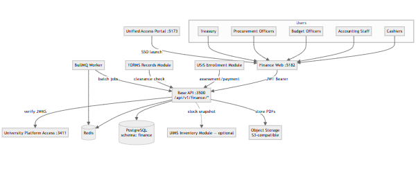
Key relationships:
| Container | Technology | Port | Purpose |
|---|---|---|---|
| Finance web | React 19 + Vite | 5182 | Multi-role financial operations UI |
| Base API (finance module) | AdonisJS 7 + Lucid ORM | 3500 | Domain services, controllers, business logic |
| PostgreSQL | PostgreSQL 15+ | 5432 | Schema finance — financial system of record |
| Redis | Redis 7+ | 6379 | Cache, queue backend, rate limiting |
| BullMQ Worker | Node.js + BullMQ | N/A | Background jobs (reports, reconciliation) |
| Object Storage | S3-compatible | N/A | OR PDF archival, report storage |
| University Platform Access | Identity service | 3411 | Authentication, authorization |
| USiS Enrollment | CIS module | 3500 | Assessment/payment client |
Deployment notes:
finance isolated within wmsu_cis databaseUFMS finance module organized by financial operation domains:
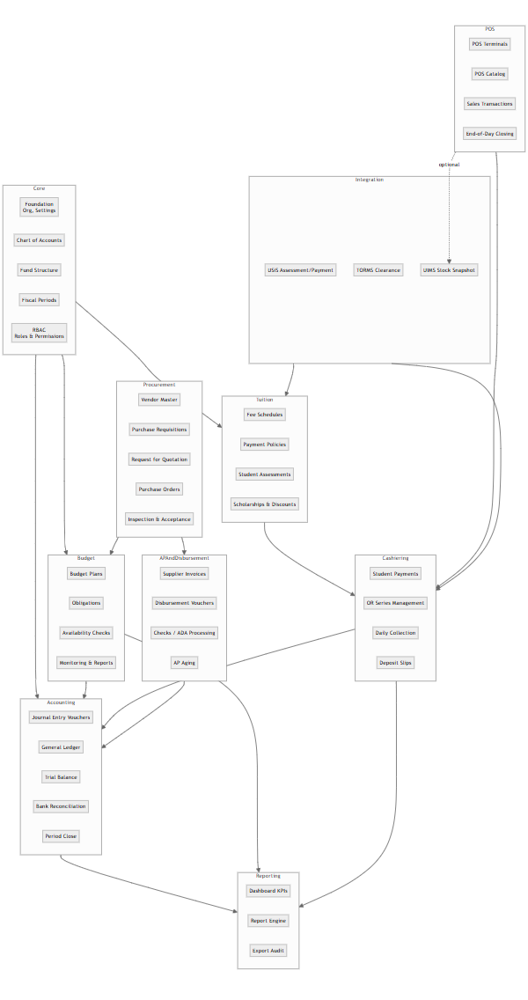
Domain responsibilities:
| Domain | Key entities | Services |
|---|---|---|
| Core | Organization, Campus, COA, Fund, FiscalPeriod, Settings | Foundation config, COA management |
| Budget | BudgetPlan, BudgetLine, Obligation | Budget planning, obligation tracking, availability checks |
| Accounting | JournalEntry, GLAccount, GLBalance, BankReconciliation | JEV posting, GL maintenance, trial balance, period close |
| Tuition | FeeSchedule, PaymentPolicy, Assessment, Scholarship | Fee configuration, assessment generation |
| Cashiering | Payment, OfficialReceipt, ORSeries, CollectionReport | Payment processing, OR issuance, daily collection |
| AP & Disbursement | Invoice, DisbursementVoucher, Check, ADA | Supplier invoices, payment disbursement |
| Procurement | Vendor, PurchaseRequisition, PurchaseOrder, InspectionReport | Procurement lifecycle |
| POS | POSTerminal, POSCatalogItem, Sale, SaleLine | Point-of-sale operations |
| Integration | AssessmentSync, PaymentStatusQuery, ClearanceCheck, StockSnapshot | External system integration |
| Reporting | Report, ReportExport, DashboardMetric | Analytics, export audit |
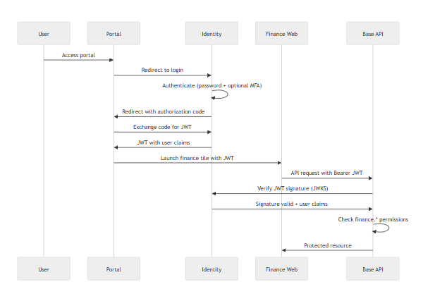
Internal API flow (USiS):
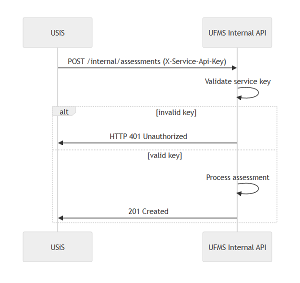
Security controls:
| Layer | Control | Implementation |
|---|---|---|
| Transport | TLS 1.2+ | Reverse proxy termination |
| Authentication | OIDC/JWT | Identity service RS256 tokens |
| Authorization | RBAC | finance.* permission checks |
| Internal APIs | Service keys | X-Service-Api-Key header |
| Financial data | Encryption at rest | Sensitive fields encrypted (bank accounts, OR) |
| Approval workflows | Authorization limits | Role-based approval authority |
| OR accountability | Cashier assignment | OR series tracked by cashier |
UFMS permission categories:
finance.cashier.* — Payment processing, OR issuancefinance.accounting.* — JEV, GL, reconciliation, period closefinance.budget.* — Budget planning, obligations, monitoringfinance.procurement.* — PR, PO, IAR workflowsfinance.treasury.* — Disbursement vouchers, checks/ADAfinance.pos.* — POS operationsfinance.reports.* — Report generation and exportfinance.config.* — System configurationRole mappings:
cashier → finance.cashier.*, finance.pos.*accountant → finance.accounting.*, finance.reports.viewbudget_officer → finance.budget.*, finance.reports.budgetprocurement_officer → finance.procurement.*treasurer → finance.treasury.*, finance.accounting.viewfinance_admin → All finance.* permissionsPostgreSQL schema finance contains:
Core tables:
organizations, campuses, settingschart_of_accounts, funds, fiscal_periodsBudget:
budget_plans, budget_lines, obligationsAccounting:
journal_entries, journal_entry_lines, gl_accounts, gl_balancesbank_accounts, bank_reconciliationsTuition:
fee_schedules, payment_policies, assessments, assessment_linesscholarships, scholarship_grantsCashiering:
payments, official_receipts, or_seriescollection_reports, deposit_slipsAP & Disbursement:
vendors, invoices, disbursement_voucherschecks, ada_recordsProcurement:
purchase_requisitions, purchase_orders, inspection_reportsPOS:
pos_terminals, pos_catalog_items, sales, sale_linesIntegration:
assessment_syncs (USiS)payment_status_queries (USiS)clearance_checks (TORMS)stock_snapshots (UIMS)Reporting:
report_exports (audit log)USiS → UFMS integration:
X-Service-Api-Key headerUFMS → UIMS integration (optional POS stock):
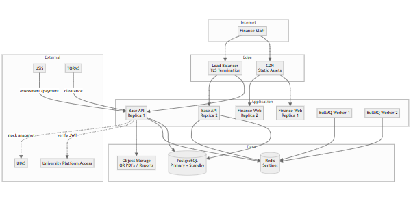
Sizing guidance:
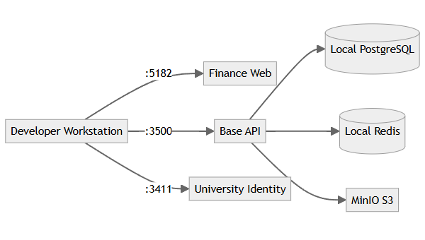
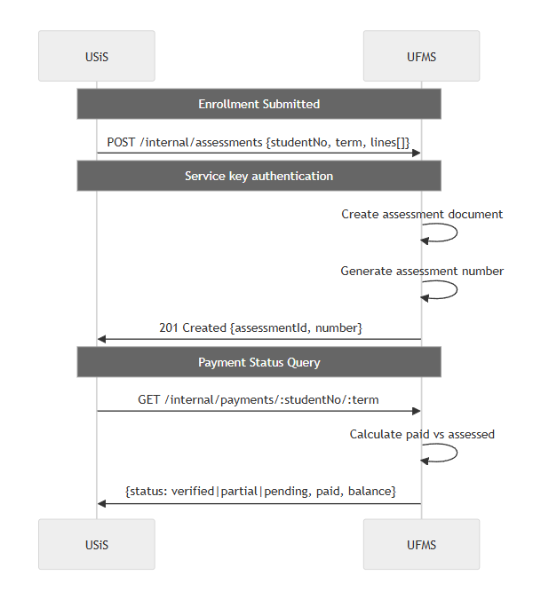
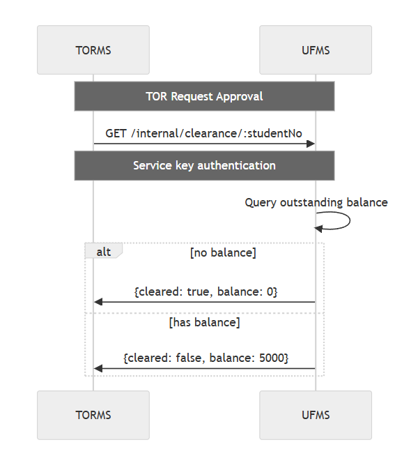
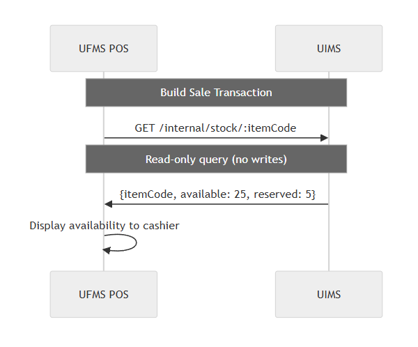
Optimization strategies:
Monitoring:
Horizontal scaling:
Data growth:
Failure handling:
Data integrity:
Code organization:
Operational:
Data privacy (RA 10173):
Financial accountability:
End of Architecture Design — UFMS
| Field | Value |
|---|---|
| Document ID | FEAT-UFMS-001 |
| Product | UFMS |
| Companions | UFMS-SRS.md · UFMS-LLD.md |
| Date | November 2026 |
UFMS provides comprehensive campus financial operations management:
| Area | Features | Status |
|---|---|---|
| Authentication | University Platform Access SSO, role-based routing | Delivered |
| Configuration | COA, funds, fiscal periods, OR series, approval workflows | Delivered |
| Budget | Planning, obligations, availability checks, monitoring, reports | Delivered |
| Accounting | JEV, GL, trial balance, bank reconciliation, period close | Delivered |
| Tuition | Fee schedules, payment policies, assessments, scholarships | Delivered |
| Cashiering | Student payments, OR issuance, daily collection, deposit slips | Delivered |
| AP & Disbursement | Invoices, disbursement vouchers, checks/ADA, aging reports | Delivered |
| Procurement | Vendor master, PR, RFQ, PO, IAR workflows | Delivered |
| POS | Terminals, catalog, sales, EOD closing, UIMS stock integration | Delivered |
| USiS Integration | Assessment upsert, payment status query, clearance verification | Delivered |
| Dashboard | KPIs, recent transactions, pending approvals | Delivered |
| Reporting | Trial balance, budget vs actual, aging, SOA, export audit | Delivered |
| Feature ID | Feature | Description | Priority | Actors |
|---|---|---|---|---|
| F-AUTH-01 | SSO Authentication | University Platform Access OIDC/JWT | Must | All |
| F-AUTH-02 | Role Routing | Home path by role (cashier/accounting/budget/procurement) | Must | All |
| F-AUTH-03 | Permission Enforcement | finance.* checks on all endpoints |
Must | System |
| F-AUTH-04 | Service Key Protection | Internal API routes require service key | Must | System |
| F-CFG-01 | COA Management | Configure chart of accounts with hierarchy | Must | Admin |
| F-CFG-02 | Fund Structure | Configure funds (general, special, trust) | Must | Admin |
| F-CFG-03 | Bank Accounts | Configure bank accounts with reconciliation parameters | Must | Admin |
| F-CFG-04 | Fiscal Periods | Define periods with open/closed status | Must | Admin |
| F-CFG-05 | OR Series Management | Configure OR series with cashier assignment | Must | Admin |
| F-CFG-06 | Approval Workflows | Configure approval workflows with limits | Should | Admin |
| F-CFG-07 | Config Audit Log | Log configuration changes | Must | System |
| F-BDG-01 | Budget Planning | Create budget plans with allocations | Must | Budget Officer |
| F-BDG-02 | Budget Approval | Workflow: draft → submitted → approved | Must | Budget Officer |
| F-BDG-03 | Obligation Tracking | Track obligations against budget | Must | System |
| F-BDG-04 | Availability Check | Verify funds before obligation | Must | System |
| F-BDG-05 | Hard Budget Stop | Block obligations if insufficient funds (configurable) | Must | System |
| F-BDG-06 | Budget Monitoring | Real-time utilization reports | Must | Budget Officer |
| F-BDG-07 | Budget vs Actual | Generate variance reports | Must | Budget Officer |
| F-BDG-08 | Budget Amendments | Support realignments with approval | Should | Budget Officer |
| F-ACC-01 | JEV Creation | Create journal entry vouchers | Must | Accountant |
| F-ACC-02 | JEV Validation | Validate debit/credit balance | Must | System |
| F-ACC-03 | GL Posting | Post JEV to general ledger | Must | System |
| F-ACC-04 | GL Balances | Maintain balances by account/fund/period | Must | System |
| F-ACC-05 | Trial Balance | Generate trial balance report | Must | Accountant |
| F-ACC-06 | Bank Reconciliation | Import and reconcile bank statements | Must | Accountant |
| F-ACC-07 | Period Close | Close fiscal period with lock | Must | Accountant |
| F-ACC-08 | Closed Period Protection | Prevent posting to closed periods | Must | System |
| F-ACC-09 | Financial Statements | Generate income statement, balance sheet | Should | Accountant |
| F-TUI-01 | Fee Schedules | Configure fees by program/level/term | Must | Admin |
| F-TUI-02 | Payment Policies | Define payment policies with due dates | Must | Admin |
| F-TUI-03 | Assessment Calculation | Calculate tuition from enrolled units | Must | System |
| F-TUI-04 | Assessment Generation | Generate assessment documents | Must | System |
| F-TUI-05 | Installment Tracking | Track installment schedules with penalties | Should | System |
| F-TUI-06 | Scholarships & Discounts | Support scholarship application to assessments | Should | Admin |
| F-CSH-01 | Student Account Lookup | Look up by student number or name | Must | Cashier |
| F-CSH-02 | Payment History Display | Show assessments and payment history | Must | Cashier |
| F-CSH-03 | Payment Recording | Record payments with payment mode | Must | Cashier |
| F-CSH-04 | Payment Validation | Reject invalid payments | Must | System |
| F-CSH-05 | OR Issuance | Issue official receipt from assigned series | Must | System |
| F-CSH-06 | OR PDF Generation | Generate OR PDF with QR code | Must | System |
| F-CSH-07 | GL Auto-Posting | Post payment to GL automatically | Must | System |
| F-CSH-08 | Daily Collection Report | Generate end-of-shift report | Must | Cashier |
| F-CSH-09 | Deposit Slip Creation | Create bank remittance deposit slip | Must | Cashier |
| F-CSH-10 | OR Series Alert | Alert when series nearing end | Should | System |
| F-APY-01 | Invoice Registration | Register supplier invoices | Must | Accountant |
| F-APY-02 | DV Creation | Create disbursement vouchers | Must | Accountant |
| F-APY-03 | DV Approval | Workflow with authorization limits | Must | Treasury |
| F-APY-04 | Check/ADA Processing | Process approved DVs | Must | Treasury |
| F-APY-05 | Disbursement GL Posting | Post disbursement to GL | Must | System |
| F-APY-06 | Check Status Tracking | Track check lifecycle | Should | Treasury |
| F-APY-07 | AP Aging Report | Generate aging report | Must | Accountant |
| F-PRC-01 | Vendor Master | Maintain supplier/vendor records | Must | Procurement |
| F-PRC-02 | PR Creation | Create purchase requisitions | Must | Requestor |
| F-PRC-03 | PR Approval | Approval workflow | Must | Procurement |
| F-PRC-04 | RFQ Issuance | Issue request for quotation | Should | Procurement |
| F-PRC-05 | PO Creation | Award supplier and create PO | Must | Procurement |
| F-PRC-06 | PO Status Tracking | Track PO lifecycle | Must | Procurement |
| F-PRC-07 | IAR Creation | Create inspection and acceptance report | Must | Receiving |
| F-PRC-08 | IAR-to-AP Link | Link IAR to PO and create AP invoice | Must | System |
| F-PRC-09 | Budget Check for PO | Verify budget before PO | Must | System |
| F-POS-01 | Terminal Configuration | Configure POS terminals | Must | Admin |
| F-POS-02 | POS Catalog | Maintain POS catalog with prices | Must | Admin |
| F-POS-03 | Stock Availability | Query UIMS for stock (optional) | Should | System |
| F-POS-04 | Sale Transaction | Build sale with multiple items | Must | Cashier |
| F-POS-05 | Sale Calculation | Calculate total with taxes/discounts | Should | System |
| F-POS-06 | Sale Completion | Complete sale with OR issuance | Must | Cashier |
| F-POS-07 | POS GL Posting | Post sale to GL | Must | System |
| F-POS-08 | EOD Closing | End-of-day closing with summary | Must | Cashier |
| F-POS-09 | Closed Terminal Protection | Prevent sales on closed terminal | Must | System |
| F-INT-01 | Assessment Upsert | USiS posts assessments via internal API | Must | System |
| F-INT-02 | Assessment Document | Generate assessment from USiS data | Must | System |
| F-INT-03 | Payment Status Query | USiS queries payment status | Must | System |
| F-INT-04 | Payment Status Response | Return pending/partial/verified status | Must | System |
| F-INT-05 | Clearance Query | TORMS/USiS query financial clearance | Must | System |
| F-INT-06 | Clearance Response | Return cleared status with balance | Must | System |
| F-DSH-01 | Finance Dashboard | Display KPIs, recent transactions, pending approvals | Must | All Finance |
| F-DSH-02 | Dashboard Widgets | Collections, receivables, disbursements, budget utilization | Should | All Finance |
| F-RPT-01 | Trial Balance Report | By period and fund | Must | Accountant |
| F-RPT-02 | Budget vs Actual Report | With variance analysis | Must | Budget Officer |
| F-RPT-03 | AR Aging Report | Accounts receivable aging | Must | Cashier, Accountant |
| F-RPT-04 | AP Aging Report | Accounts payable aging | Must | Accountant |
| F-RPT-05 | Statement of Account | Student SOA | Must | Cashier |
| F-RPT-06 | Daily Collection Report | By cashier | Must | Cashier |
| F-RPT-07 | Report Export | CSV, Excel, PDF formats | Must | All Finance |
| F-RPT-08 | Export Audit Log | Log exports with user/timestamp | Must | System |
| Requirement ID | Requirement | Related Features | Priority | Implementation Status |
|---|---|---|---|---|
| FR-AUTH-001..005 | Authentication and authorization | F-AUTH-01..04 | Must | Delivered |
| FR-CFG-001..007 | Configuration management | F-CFG-01..07 | Must/Should | Delivered |
| FR-BDG-001..008 | Budget management | F-BDG-01..08 | Must/Should | Delivered |
| FR-ACC-001..009 | Accounting | F-ACC-01..09 | Must/Should | Delivered |
| FR-TUI-001..006 | Tuition and fees | F-TUI-01..06 | Must/Should | Delivered |
| FR-CSH-001..010 | Cashiering and receivables | F-CSH-01..10 | Must/Should | Delivered |
| FR-APY-001..007 | Accounts payable and disbursement | F-APY-01..07 | Must/Should | Delivered |
| FR-PRC-001..009 | Procurement | F-PRC-01..09 | Must/Should | Delivered |
| FR-POS-001..009 | Point-of-sale | F-POS-01..09 | Must/Should | Delivered |
| FR-INT-001..006 | USiS integration (internal APIs) | F-INT-01..06 | Must | Delivered |
| FR-DSH-001..002 | Dashboard | F-DSH-01..02 | Must/Should | Delivered |
| FR-RPT-001..008 | Reporting | F-RPT-01..08 | Must | Delivered |
| NFR Category | Requirement ID | Related Features | Implementation Approach |
|---|---|---|---|
| Performance | NFR-PERF-001..005 | All features | Database indexing, Redis caching, async jobs, pagination |
| Scalability | NFR-SCAL-001..004 | All features | Horizontal API scaling, worker pools, table partitioning |
| Security | NFR-SEC-001..010 | F-AUTH-, F-CFG-, F-CSH-05 | TLS, RBAC, service keys, encryption, audit logging, OR accountability |
| Reliability | NFR-REL-001..006 | All features | HA deployment, backups, DR procedures, immutable GL, period close |
| Maintainability | NFR-MAIN-001..005 | All features | Modular architecture, OpenAPI, structured logs, versioned migrations |
| Compliance | NFR-COMP-001..005 | Financial data | RA 10173, GASB/IPSAS alignment, 7-year audit retention, OR accountability |
WMSU TOR VI.E.3 compliance matrix:
| TOR Requirement | Feature IDs | Implementation Notes | Compliance Status |
|---|---|---|---|
| Budget management and monitoring | F-BDG-01..08 | Planning, obligations, availability checks, utilization | Delivered |
| Journal entry and general ledger | F-ACC-01..09 | JEV, GL posting, trial balance, reconciliation, period close | Delivered |
| Tuition fee management | F-TUI-01..06 | Fee schedules, payment policies, assessments | Delivered |
| Cashiering and receivables | F-CSH-01..10 | Payments, OR issuance, daily collection, deposits | Delivered |
| Accounts payable and disbursement | F-APY-01..07 | Invoices, DVs, checks/ADA, aging | Delivered |
| Procurement workflows | F-PRC-01..09 | PR, RFQ, PO, IAR, vendor management | Delivered |
| Point-of-sale operations | F-POS-01..09 | Terminals, sales, EOD, UIMS integration | Delivered |
| USiS integration | F-INT-01..06 | Assessment handoff, payment status, clearance | Delivered |
| Financial reporting | F-RPT-01..08 | Trial balance, budget vs actual, aging, SOA, export audit | Delivered |
| Configuration and setup | F-CFG-01..07 | COA, funds, periods, OR series, workflows | Delivered |
Deferred/Out of scope:
| Metric | Target | Measurement |
|---|---|---|
| API response (p95) | ≤2s standard queries | APM monitoring |
| Payment + OR | ≤3s | Performance profiling |
| Budget availability check | ≤1s | Real-time testing |
| Trial balance (10K txns) | ≤30s | Job duration metrics |
| Control | Implementation | Verification |
|---|---|---|
| TLS enforcement | Reverse proxy/ingress | SSL Labs scan |
| RBAC | finance.* permission checks |
Automated security tests |
| Service keys | Internal API protection | Integration tests |
| Encryption at rest | Bank accounts, OR numbers | Security audit |
| Audit logging | All transactions, posting, config | Log review |
| OR accountability | Cashier assignment | Reconciliation reports |
| Measure | Target | Method |
|---|---|---|
| Availability | ≥99.5% business hours | SLA monitoring |
| Backup frequency | Daily incremental, weekly full | Automated verification |
| RPO | ≤15 minutes | DR drill testing |
| GL immutability | Reversing JEV only | Business rule enforcement |
| Period close integrity | Posting prevention on closed | Automated tests |
| Actor | Primary Features | Restricted Features |
|---|---|---|
| Cashier | F-CSH-01..10, F-POS-01..09 | Own cashier operations |
| Accountant | F-ACC-01..09, F-APY-01..07, F-RPT-01, F-RPT-04 | Full accounting |
| Budget Officer | F-BDG-01..08, F-RPT-02 | Budget oversight |
| Procurement Officer | F-PRC-01..09 | Procurement processes |
| Treasury | F-APY-03..06, F-ACC-06 | Disbursement authority |
| Finance Admin | F-CFG-01..07, All reports | System configuration |
| USiS (System) | F-INT-01..06 | Internal API only (service key) |
| TORMS (System) | F-INT-05..06 | Clearance API only (service key) |
End of Features & Requirements — UFMS
| Field | Value |
|---|---|
| Document ID | LLD-UFMS-001 |
| Product | UFMS |
| Companion | UFMS-SRS.md |
| Date | November 2026 |
This Low-Level Design documents critical workflows for UFMS cashiering, budget management, procurement, disbursement, POS operations, and USiS integration — providing sequence diagrams, state machines, and implementation details.
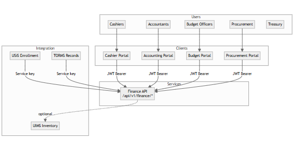
Role-specific routes:
/cashier/*/accounting/*/budget/*/procurement/*/treasury/*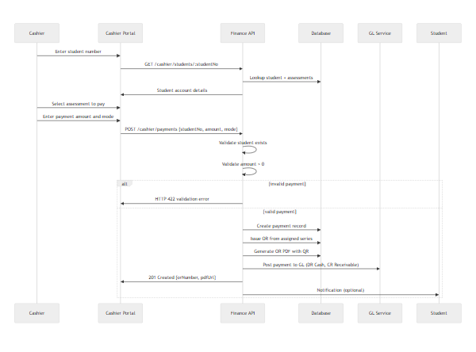
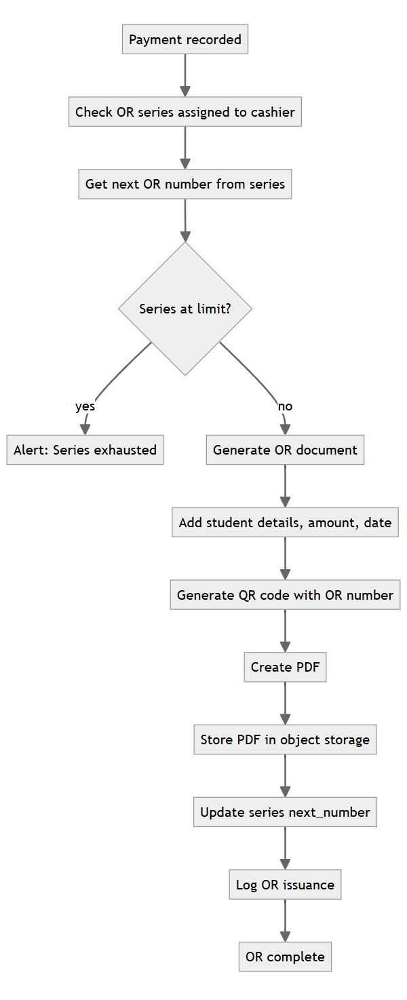
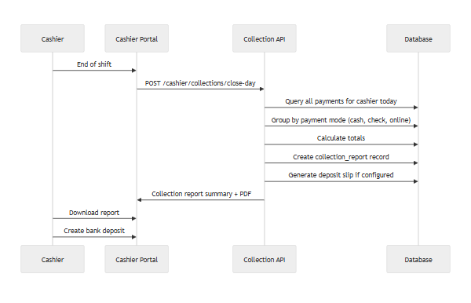
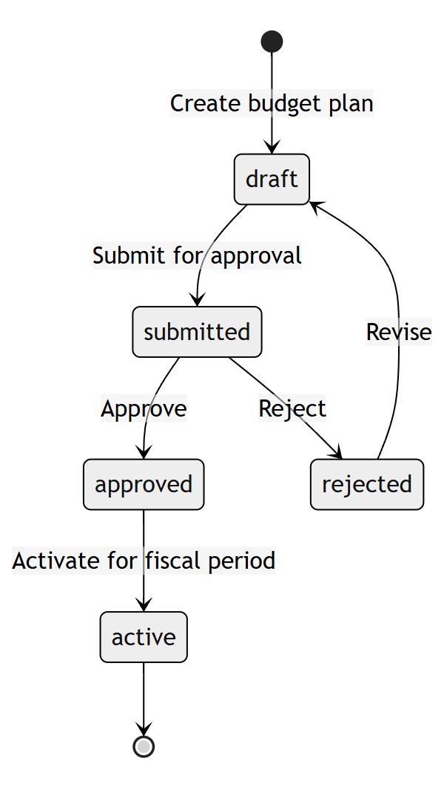
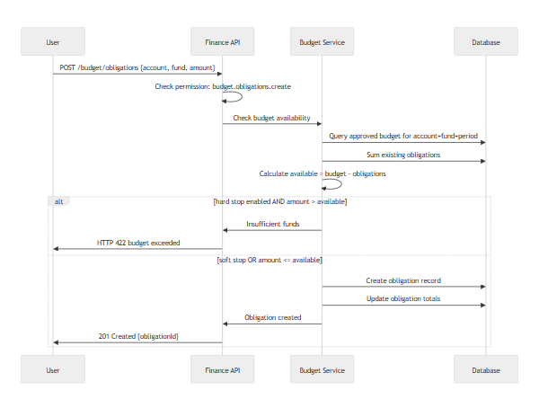
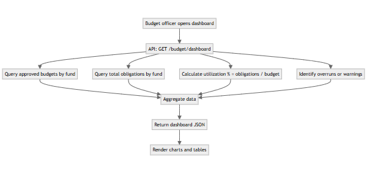
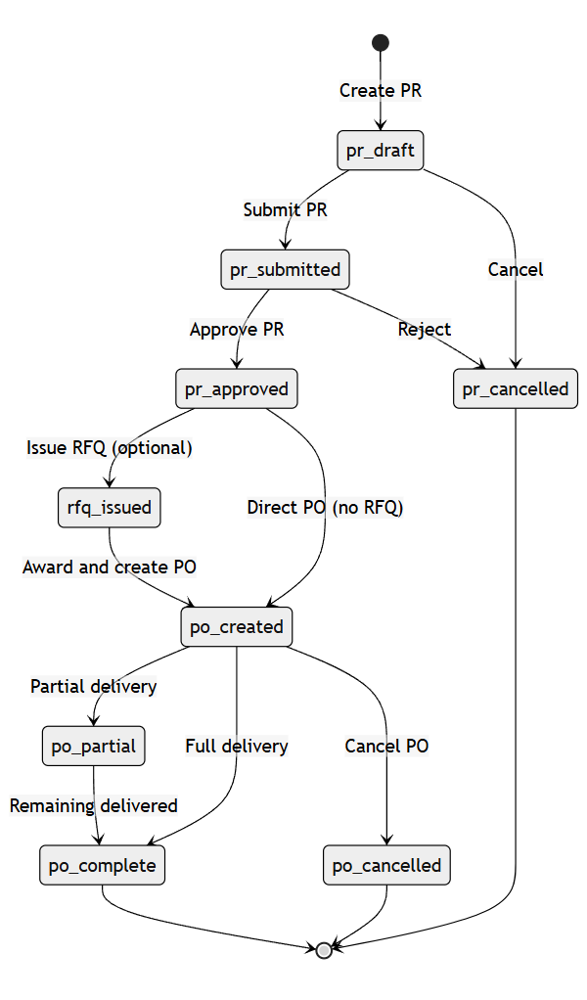
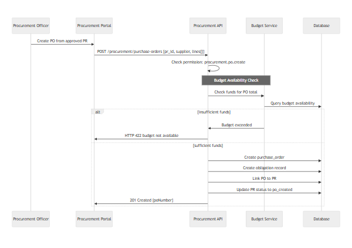
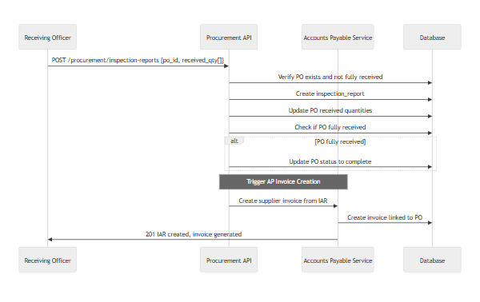
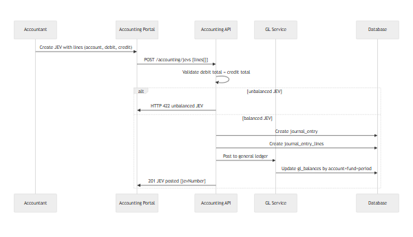
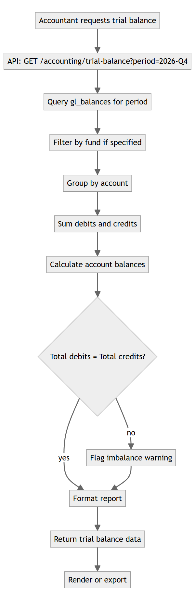
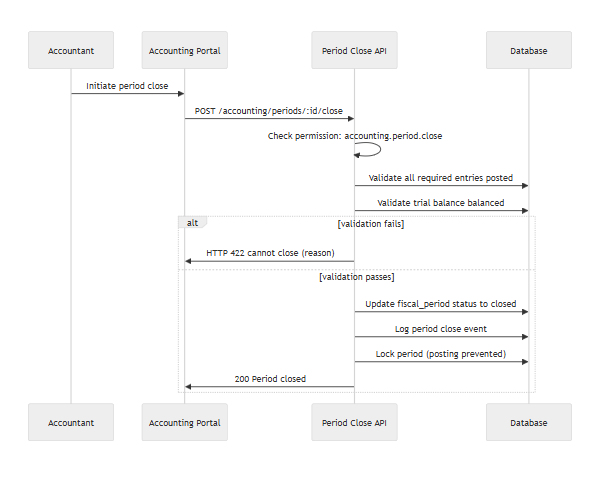
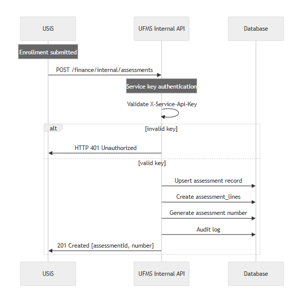
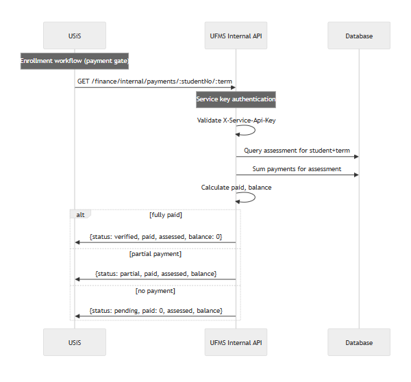
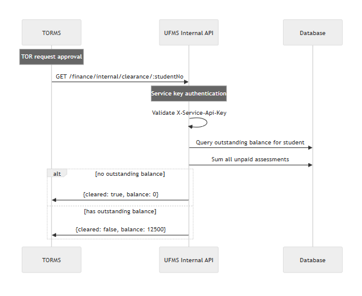
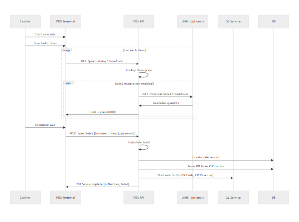
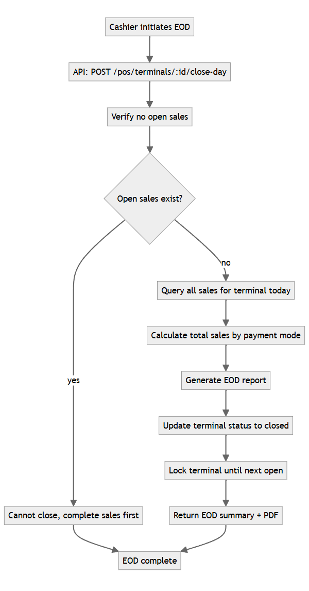
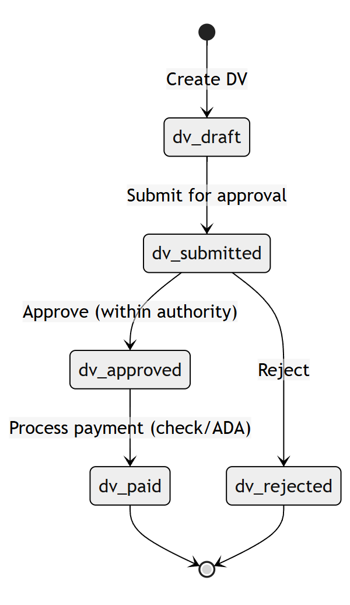
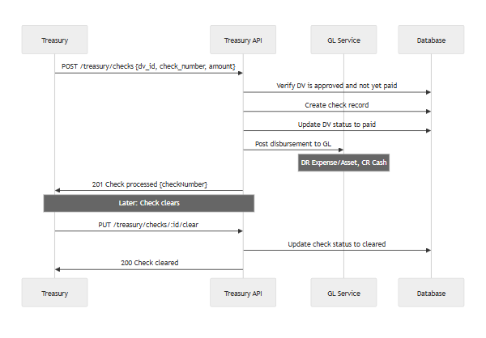
| Case | Expected Behavior | HTTP Status | User Message |
|---|---|---|---|
| Record payment for unknown student | Reject payment | 422 | "Student not found." |
| Record payment with amount ≤ 0 | Reject payment | 422 | "Invalid payment amount." |
| Budget obligation exceeds available (hard stop) | Block obligation | 422 | "Insufficient budget: Available ₱50,000, Requested ₱75,000." |
| Post JEV with unbalanced debit/credit | Block posting | 422 | "JEV unbalanced: Debit ₱100,000, Credit ₱95,000." |
| Post to closed fiscal period | Block posting | 422 | "Cannot post to closed period 2026-Q3." |
| USiS calls internal API without service key | Block request | 401 | "Service key required." |
| Create PO without approved PR | Block PO creation | 422 | "PR must be approved before PO." |
| IAR for non-existent PO | Reject IAR | 404 | "Purchase order not found." |
| POS sale on closed terminal | Block sale | 422 | "Terminal is closed. Start new day first." |
| Close EOD with open sales | Block close | 422 | "Cannot close. {N} sales still open." |
| OR series exhausted | Alert + block payment | 422 | "OR series exhausted. Request new series." |
| UIMS unavailable during POS stock check | Log warning, allow sale without stock check | 200 | "(Stock check unavailable)" |
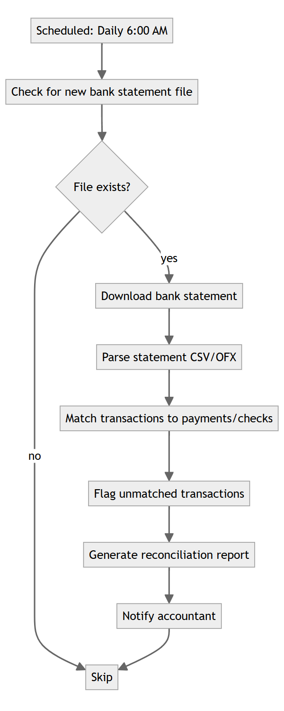
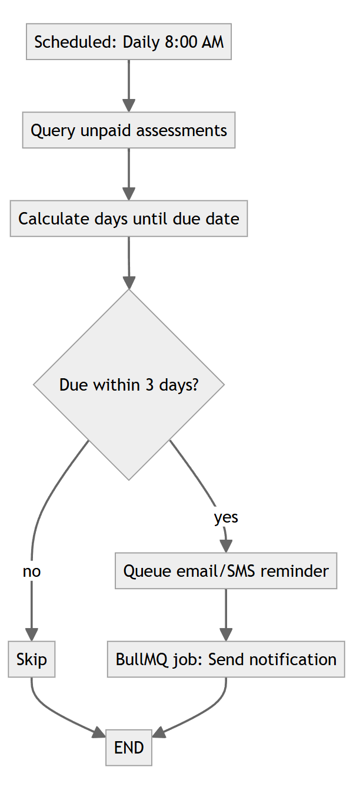
End of LLD — UFMS